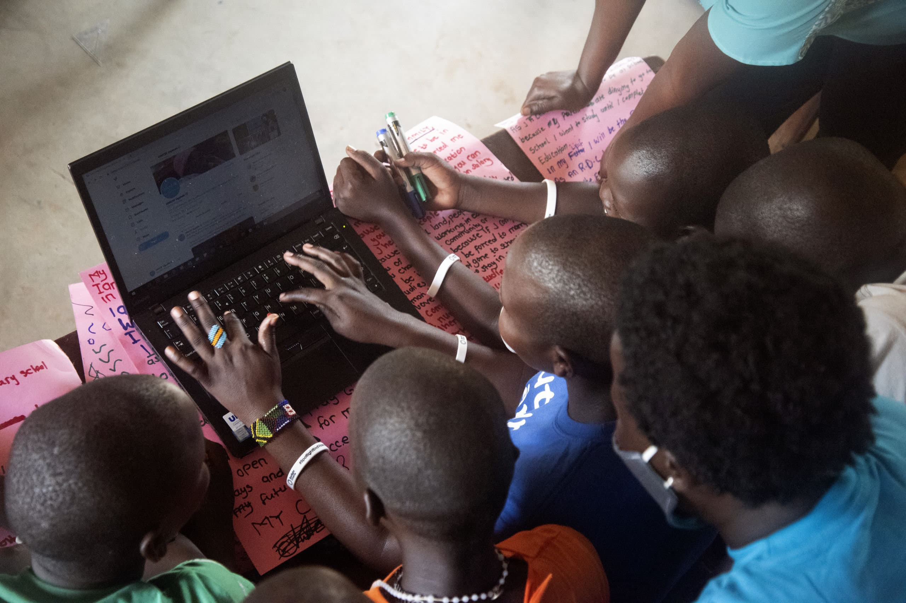
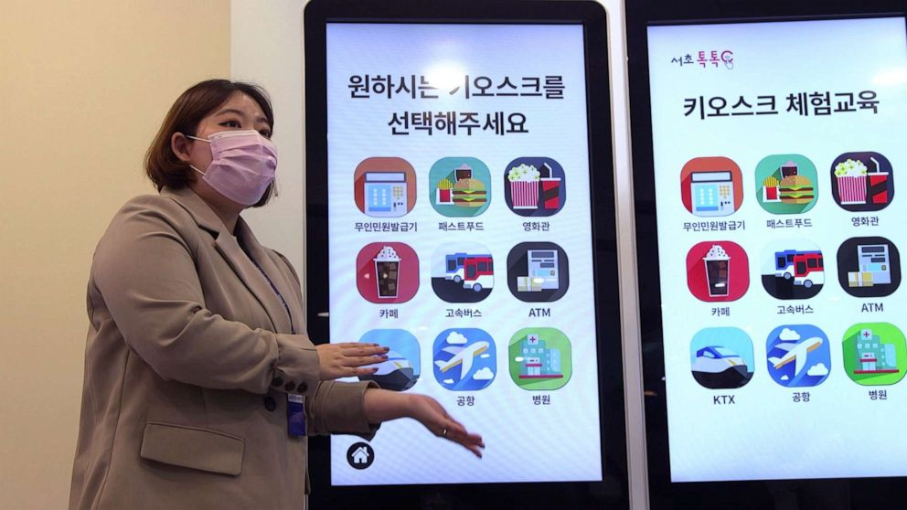

교육 격차란?
경제적 격차
소득 수준에 따른 교육 기회의 차이로, 저소득층 학생들이 고품질 교육에 접근하기 어려운 상황입니다.
지역적 격차
도시와 농촌 간의 교육 인프라 차이로 인해 발생하는 교육의 질과 기회의 불균형입니다.
디지털 격차
디지털 기기와 인터넷 접근성의 차이로 인해 발생하는 교육 기회의 불평등입니다.
디지털 소외의 현실
고령층
스마트폰과 인터넷 사용에 어려움을 겪는 어르신들이 늘어나고 있습니다.
저소득층
경제적 부담으로 인해 디지털 기기를 구매하기 어려운 상황입니다.
농촌 지역
인터넷 인프라가 부족하여 온라인 교육과 정보 접근이 제한됩니다.
현재 상황
- 코로나19로 인한 원격수업 확산으로 디지털 교육 격차 심화
- 농촌과 도심지 간 인터넷 인프라 격차로 인한 온라인 교육 접근성 차이
- 경제적 어려움으로 인한 디지털 기기 보유율 차이
- 고령층 및 저소득층의 디지털 활용 능력 부족 문제
실제 사례

컴퓨터나 인터넷이 제한된 환경에서 여러 학생이 하나의 화면을 공유하며 학습하는 모습입니다.

서울의 노인학습센터에서 디지털 키오스크 사용법을 배우는 어르신들의 모습입니다.
현재 상황은 얼마나 심각할까요?
디지털정보화 수준 격차(2024년)
고령층 인터넷 이용률
50% 미만
저소득층 스마트폰 보유율
70% 이하
전체 평균 스마트폰 보유율
90% 이상
우리가 함께할 수 있습니다
누군가에게는 당연한 디지털 환경, 누군가에게는 넘기 힘든 장벽입니다.